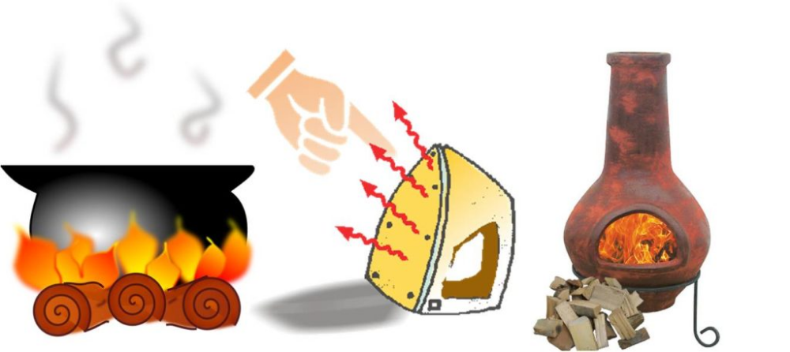
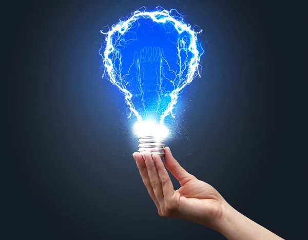
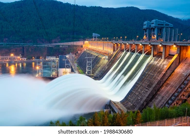
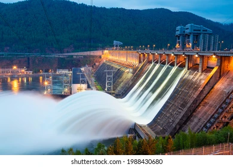
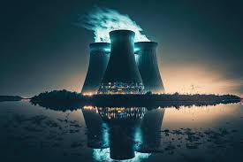
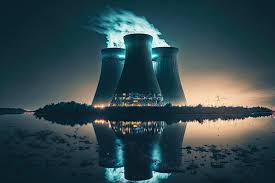
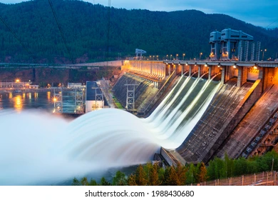
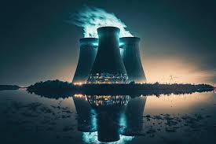
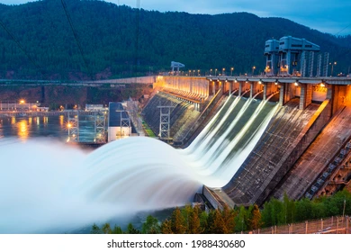
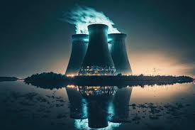

 


 





Que es la energia calorifica
La energía térmica o también conocida como energía calórica o calorífica, es aquella energía contenida en un sistema y que es responsable de su temperatura, sea frío o calor. Es también la energía liberada por cualquier elemento en forma de calor.
Para que sirve la energia calorifica
Principalmente consiste en acumular la energía térmica proveniente del sol para utilizarla en diferentes fines como, por ejemplo, calentar líquidos y gases, aprovechando la energía térmica para proporcionar calefacción, refrigeración o agua caliente sanitaria al hogar.
Como puedo obtener energia calorifica
Esta energía puede obtenerse de múltiples maneras. Por ejemplo, de forma natural (gracias al sol) o de forma artificial (debido a combustibles como el petróleo, el gas o el carbón; o la electricidad). Es decir, que la energía calórica o térmica puede obtenerse de otras formas de energía como por ejemplo la energía eléctrica (calefacción) o reacciones químicas (como por ejemplo la combustión).
¿Qué es la energía eléctrica?
La energía eléctrica es aquella que se origina de la diferencia de potencial eléctrico entre dos puntos determinados, que se ponen en contacto a través de un transmisor eléctrico. Este contacto genera una corriente eléctrica basada en la transmisión de cargas negativas (llamadas, más comúnmente, electrones) hasta su punto de consumo.
para que sirve la energia electrica
En el hogar, en los servicios, en la industria o, incluso, en el transporte, la energía eléctrica tiene un amplio abanico de aplicaciones. Con la electricidad, se puede iluminar, obtener calor y frío, calentar agua, cocinar, o poner en marcha un aparato.
como se obtiene la energia electrica
Existen dos formas de obtener electricidad:
A partir de fuentes de energía primarias renovables, como el viento, la radiación solar o las mareas.
O a partir de fuentes de energía primarias no renovables como el carbón, el gas natural, el petróleo o la energía nuclear.
¿Que se la energía química?
La energía química se manifiesta en determinadas reacciones químicas en las que se forman o rompen enlaces químicos. El carbón, el gas natural o el funcionamiento de las baterías son algunos ejemplos del uso de esta energía.
¿Cómo se obtiene la energía química?
La energía química puede liberarse durante una reacción química, a menudo en forma de calor. Tales reacciones se denominan exotérmicas. Las reacciones que requieren una entrada de calor para continuar pueden almacenar algo de esa energía bajo su compuesto químico en enlaces recién formados.
para que sirve la energia quimica
Además, la energía química es una forma de energía potencial que sirve para ser transformada en otras formas de energía que tienen aplicaciones prácticas en la vida humana, como energía lumínica, térmica, cinética, etc., para llevar a cabo un trabajo.
que es la energía hidráulica
Energía hidráulica, energía hídrica o hidroenergía es aquella que se obtiene a partir del aprovechamiento de las energías cinéticas y potenciales de la corriente del agua, saltos de agua o mareas. Se puede transformar a diferentes escalas
como se obtiene la energia hidraulica
Su obtención se debe al aprovechamiento de la energía cinética y potencial de los saltos de agua o corrientes. El propio movimiento del agua hace girar una turbina, que está conectada a un transformador, produce la energía eléctrica
para que sirve la energia hidraulica
La energía hidráulica, también conocida como hidroeléctrica, aprovecha la fuerza del agua en movimiento para producir electricidad. El uso de recursos hídricos como fuente de energía es una práctica ancestral.
que es la energia eolica
La energía eólica es la energía que se obtiene a partir del viento, es decir, es el aprovechamiento de la energía cinética de las masas de aire. El término «eólico» proviene del latín aeolicus, o ‘perteneciente o relativo a Eolo’, dios de los vientos en la mitología griega
como se obtiene la energia eolica
A través de un aerogenerador que transforma la energía cinética de las corrientes de aire en energía eléctrica. El proceso de extracción se realiza principalmente gracias al rotor, que transforma la energía cinética en energía mecánica, y al generador, que transforma dicha energía mecánica en eléctrica.
para que sirve la energia eollica
La energía eólica se utiliza para producir la corriente eléctrica continua que se necesita para producir el hidrógeno renovable. Este tipo de hidrógeno se utiliza, por ejemplo, para producir los combustibles renovables.
que es la energia radiante
En física, y en particular medida por radiometría, la energía radiante es la energía de la radiación electromagnética y gravitacional. Como energía, su unidad SI es el joule. La cantidad de energía radiante puede calcularse integrando el flujo radiante con respecto al tiempo.
como se obtiene la energia radiante
La energía radiante se genera u obtiene a partir de las ondas electromagnéticas, como la luz visible, las ondas de radio y los rayos. Es un tipo de energía que se puede obtener sin necesidad de un material de soporte. También se obtiene por medio de pulsos electromagnéticos solares.
que es la energia nuclear
La energía nuclear es la que se libera espontánea o artificialmente en las reacciones nucleares. Sin embargo, este término engloba otro significado que es el aprovechamiento de dicha energía para otros fines, tales como la obtención de energía eléctrica, térmica y mecánica a partir de reacciones atómicas
como se obtiene la energia nuclear
Ésta energía se puede obtener de dos formas: fusión nuclear y fisión nuclear. En la fusión nuclear, la energía se libera cuando los núcleos de los átomos se combinan o se fusionan entre sí para formar un núcleo más grande. Así es como el sol produce energía.
para que sirve la energia nuclear
La energía nuclear es la energía que mantiene unidos neutrones y protones. La energía nuclear se puede utilizar para producir electricidad. Pero primero la energía debe ser liberada. Ésta energía se puede obtener de dos formas: fusión nuclear y fisión nuclear.